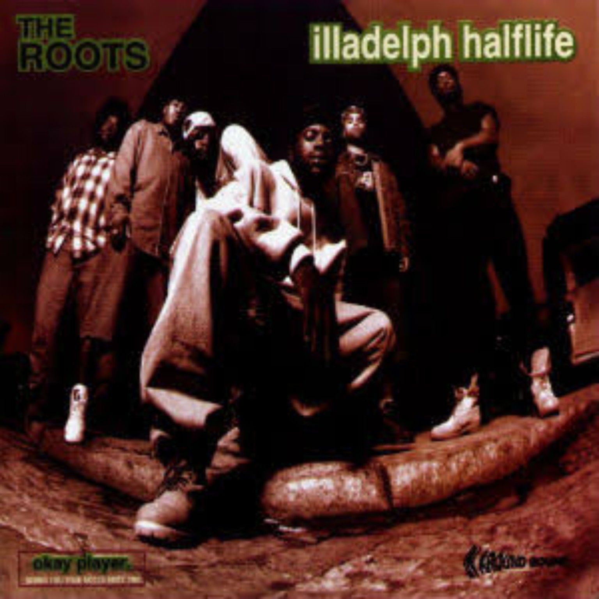
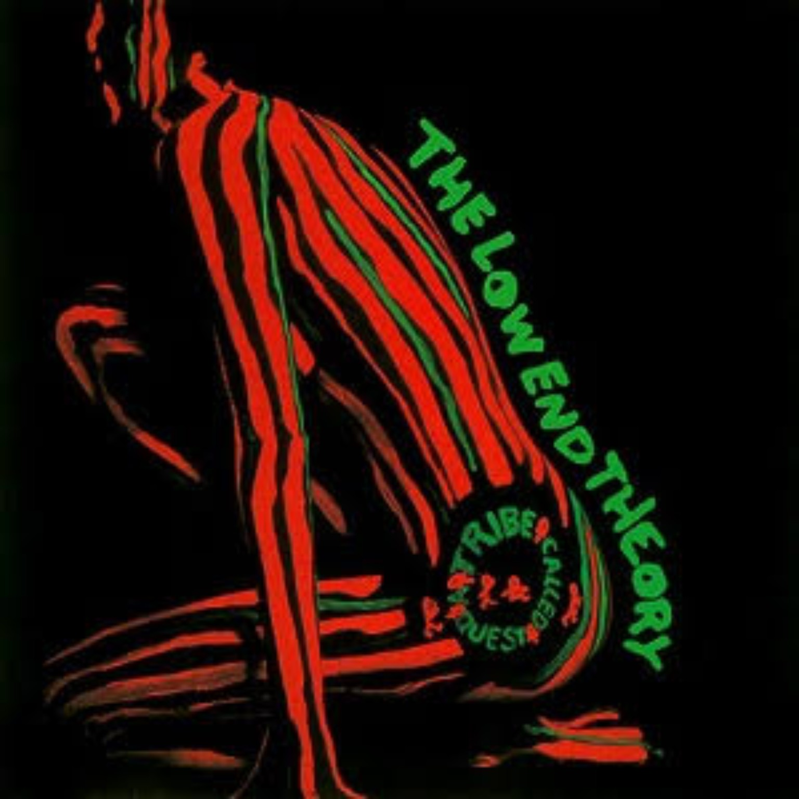
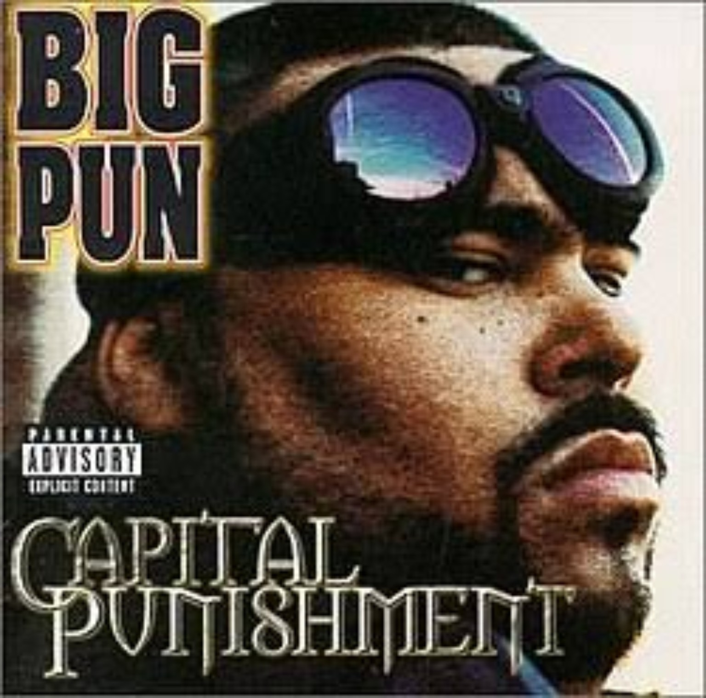
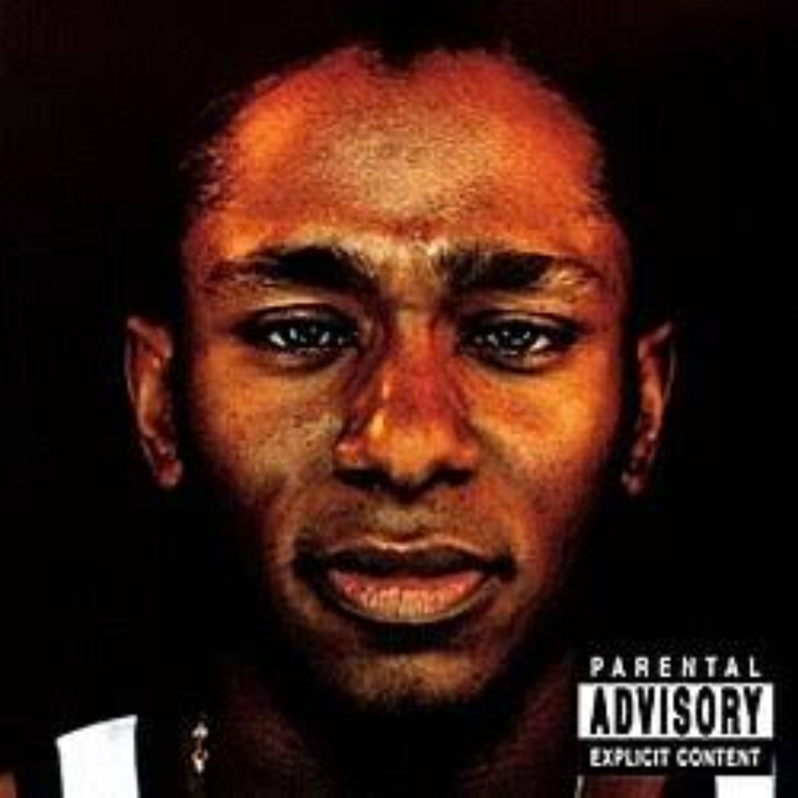
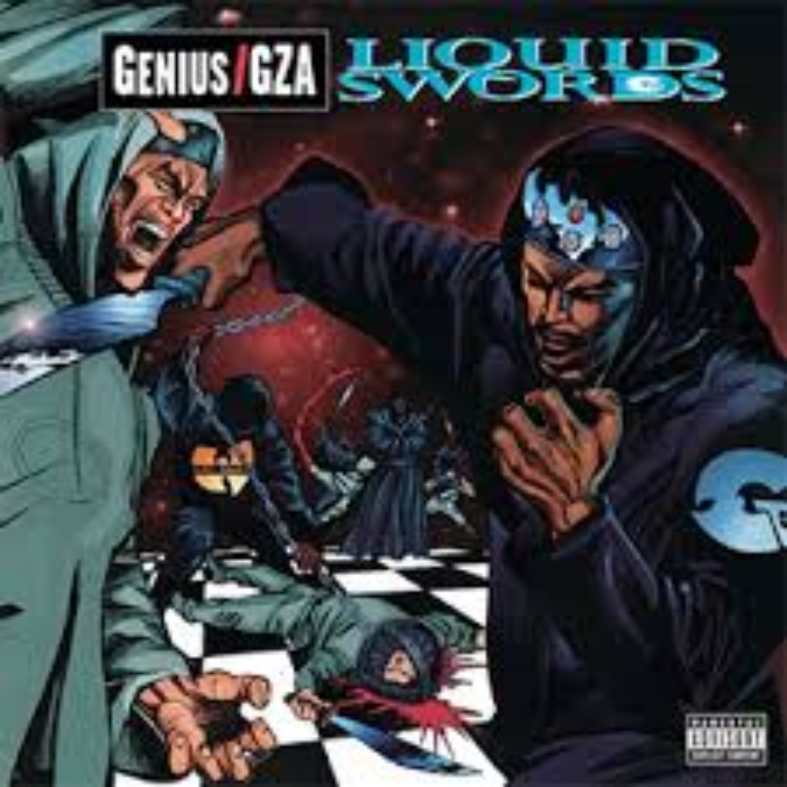
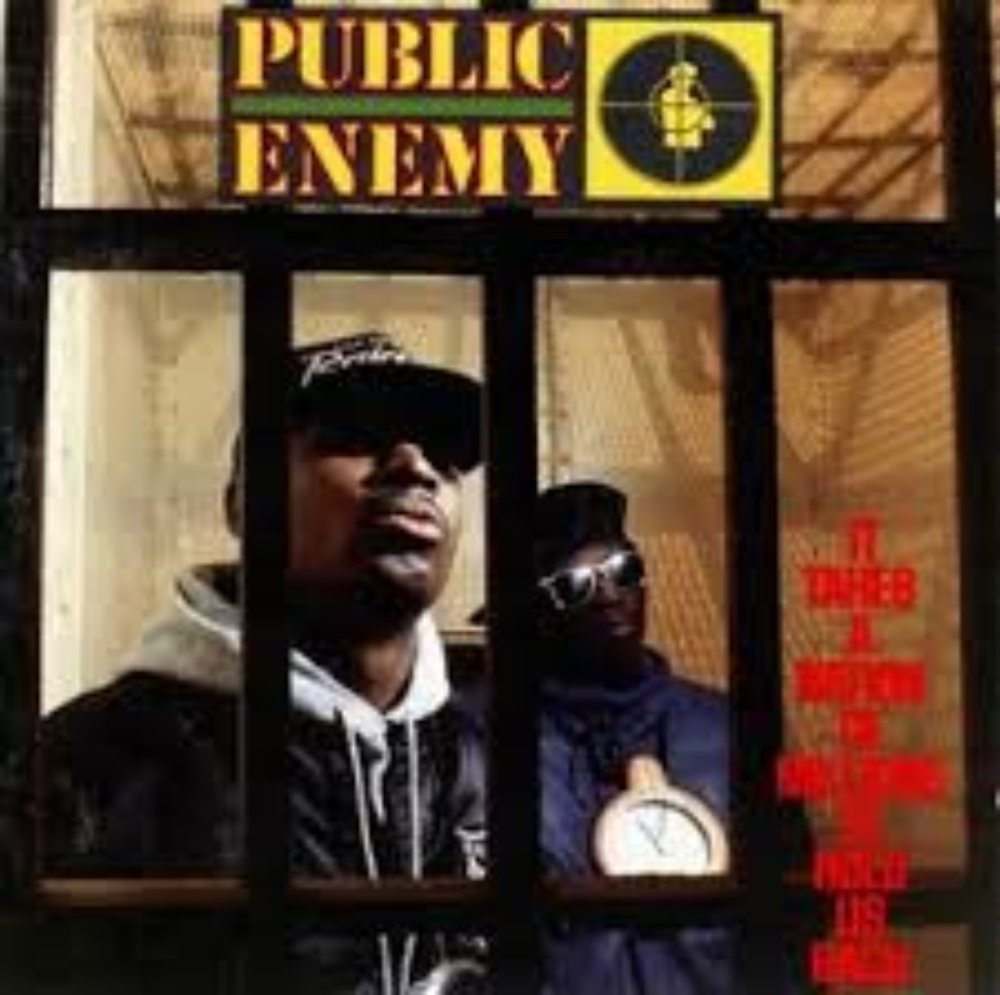
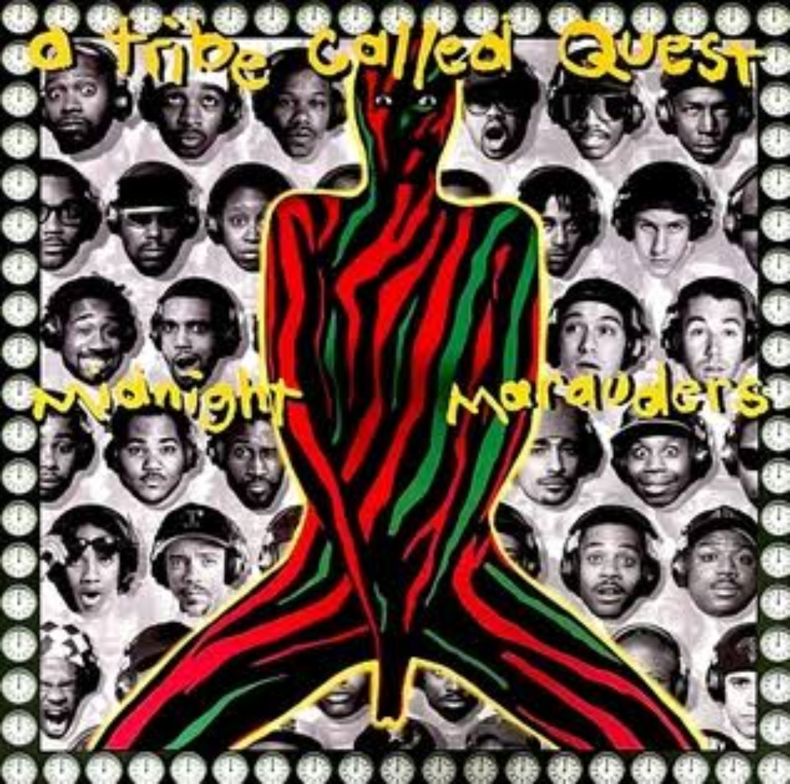
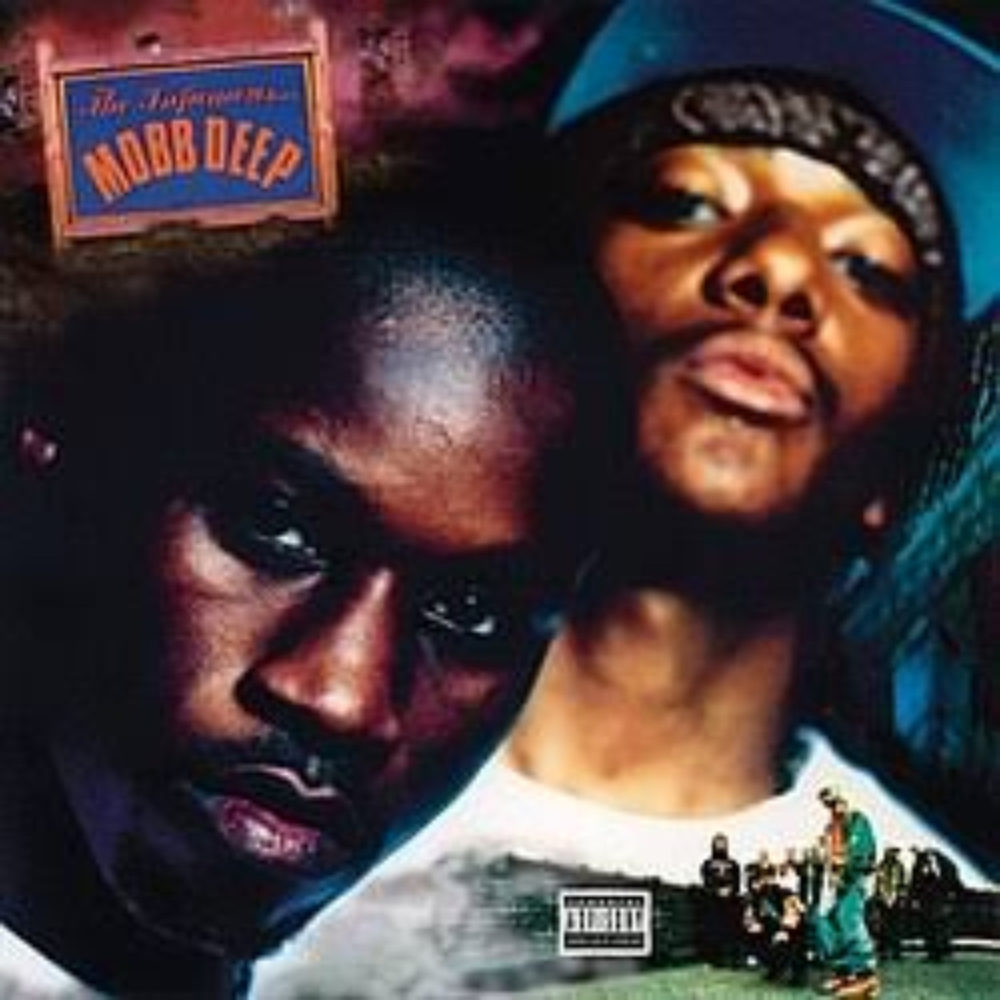
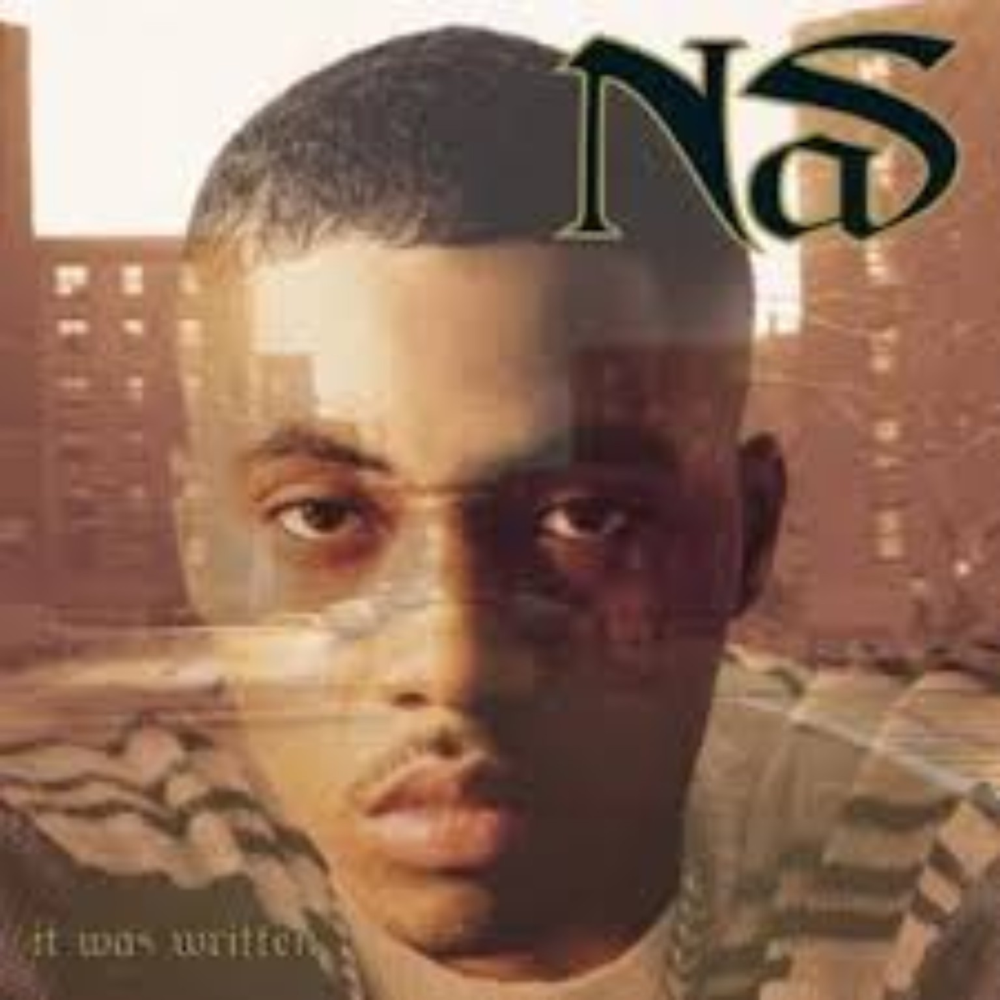

The East was stacked. That sounds obvious until you actually try to cut the history down to 25 albums.
Different eras demanded different things. Some projects changed the mechanics of rapping. Some created an entire sound. Some were commercial takeovers. Some became cult classics whose influence grew over time. We wanted the list to respect all of that without turning it into a museum piece.
Full-album quality. Replay value. Production. Songwriting. Influence. Impact. Peak. How the project represented its era — and how much it still matters now.
This is 4DK’s perspective. We are not pretending consensus does not exist, but we are also not copying somebody else’s canon. If we connect with one classic more than another, that matters.
Cover art loads from Apple’s public music catalog only when the artist and album match closely. If an exact match is not found, we show a labeled fallback instead of forcing the wrong cover.
We started with a huge pool, made brutal cuts, revised the ranking again after seeing the whole board, and still left classics outside the 25. Now let’s argue.

Illadelph Halflife
By 1996, The Roots had already shown that they were never going to sound like everybody else. Illadelph Halflife took the live instrumentation and jazz-minded foundation of their earlier work and made it darker, harder and more focused. Black Thought sounds sharper and more commanding, while the band proves that being built around live musicians never meant sacrificing the grit of mid-’90s East Coast rap.
Records like “Clones,” “No Alibi” and “Concerto of the Desperado” show why this album has aged so well: technical musicianship, hard drums, elite rapping and an atmosphere that feels unmistakably Philadelphia. The quality is absolutely Top-25 worthy. The only thing working against it is the competition. There are albums above it that changed the culture on a larger scale or became even more definitive statements for their artists. If Illadelph Halflife is No. 25, that tells you immediately how stacked the East was.

The Low End Theory
The Low End Theory helped redefine how jazz and hip-hop could live together. Instead of jazz samples feeling like decoration, Tribe built an entire musical language around bass, drums, space and groove. The production feels minimal until you realize how much every sound matters.
This is also where Phife Dawg became essential to Tribe’s identity. Q-Tip’s smooth, thoughtful presence and Phife’s punchier personality created a balance that would define the group’s best work. Historically, this album could rank much higher. We actually moved it up during the final revision for that reason. But 4DK is not ranking strictly by historical importance; replay value and complete-album preference matter too. Even at No. 24, this remains one of the foundational records in East Coast history.

Capital Punishment
This album is where any discussion about Big Pun’s shortened career gets frustrating, because Capital Punishment showed how complete he already was. Pun could overwhelm a beat technically without losing rhythm or personality. The internal rhymes, breath control and wordplay were elite, but the album was not just a lyrical exhibition. He could make street records, posse cuts and commercial records without sounding like he was changing who he was.
“Beware” is Pun in attack mode. “You Ain’t a Killer” puts the focus directly on his writing and delivery. “Dream Shatterer” is another reminder that underneath the charisma was one of the nastiest pure rappers New York produced in the ’90s. His limited catalog naturally makes this album carry almost the entire weight of his album legacy, but as a single display of MC ability, very few projects on this list can embarrass it.

Black on Both Sides
After Black Star, expectations for Mos Def’s solo debut were already high. Black on Both Sides proved he could carry an entire project while expanding far beyond the “conscious rapper” box. He talks about hip-hop, race, Brooklyn, politics, relationships and Black identity, but the album rarely feels like somebody lecturing the listener. Mos is too musical and too naturally charismatic for that.
“Speed Law” is effortless technically, “Brooklyn” is hometown atmosphere, and “Mathematics” puts social commentary and straight rapping in the same room. This is one of those records that probably has a better argument for being higher than its actual position suggests. Once we reached the final 20, though, we were dealing with albums that did not just represent movements — some of them changed the direction of rap itself.
The Miseducation of Lauryn Hill
There may not be another album on this list that shows as many sides of one artist. Lauryn could rap with anybody, sing records that crossed into an entirely different audience, write about motherhood, relationships, spirituality and fame, then turn around and remind everybody on “Lost Ones” that she could still get busy on the mic.
The album became much bigger than hip-hop, and its reputation has only grown. For our highlighted tracks, we intentionally lean toward the rap side: “Final Hour” is a reminder of Lauryn the MC, while “Every Ghetto, Every City” gives the record an autobiographical neighborhood perspective that can get overlooked beside the giant singles. This placement will make some people mad, but this is specifically a 4DK East Coast hip-hop ranking. Judged through that lens against 20 records we connect with more specifically as rap albums, No. 21 is where it lands.

Liquid Swords
If Only Built 4 Cuban Linx… feels like a crime film, Liquid Swords feels like walking through New York at two in the morning with nobody around. Everything is cold — the beats, the samples, GZA’s delivery, even the pacing. RZA’s production is dark without becoming repetitive, and GZA never has to raise his voice to sound dangerous.
That calm delivery is part of the appeal. “Duel of the Iron Mic” brings multiple Wu voices into the atmosphere, “Investigative Reports” keeps the street imagery sharp, and “Swordsman” shows why the album rewards listeners who sit with it instead of only running to the biggest records. We moved this album up during the final revision because its cohesion and writing were simply too strong to keep near the bottom.

It Takes a Nation of Millions to Hold Us Back
There are albums on this list that perfected a sound. This is one of the albums that helped change what rap albums were allowed to sound like in the first place. Chuck D raps like he is delivering a broadcast. Flavor Flav is the unpredictable counterweight. The Bomb Squad turns the production into organized chaos — sirens, scratches, drums and samples colliding without losing the rhythm underneath it.
“Black Steel in the Hour of Chaos” shows how cinematic Chuck could be. “Night of the Living Baseheads” attacks addiction without turning into a lecture. If this were strictly an importance-and-influence ranking, the album could easily be Top 10. But 4DK also weighs replay value and our connection to the albums themselves. We respect what it changed without pretending we reach for it as often as some of the records ranked above it.
The Black Album
By 2003, Jay-Z did not need to prove he could make a great rap album anymore. He already had Reasonable Doubt and The Blueprint. What made The Black Album different was the framing: this was supposed to be the goodbye.
That retirement context gave the project a reflective energy. “December 4th” lets Jay tell his story with his mother helping frame it. “Threat” is the kind of album cut that gets overshadowed by the singles but shows how loose and confident he was. “Allure” is one of those Jay records that got better with time. The production roster is stacked, yet the record still feels cohesive because Jay is the thing holding it together. At No. 18, Jay’s own catalog is almost working against him — we simply have two of his albums much higher.
Supa Dupa Fly
You can hear plenty of 1997 rap albums and immediately know exactly what era they came from. Supa Dupa Fly is different. Missy Elliott and Timbaland made music that sounded futuristic in 1997, and decades later some of those ideas still do not sound conventional.
Timbaland leaves space where other producers would have filled every second. Strange percussion, vocal effects, pauses and off-center rhythms become part of the language. Missy had enough personality to make all of it feel playful instead of experimental for the sake of being different. Our picks deliberately go deeper than “The Rain”: “Friendly Skies,” “Izzy Izzy Ahh” and “Best Friends” show the songwriting, personality and musicality that made this debut much bigger than a visual gimmick.
It’s Dark and Hell Is Hot
DMX did not ease into the game. It’s Dark and Hell Is Hot felt like somebody kicked the door open. The aggression was obvious, but so were fear, prayer, guilt, paranoia and constant internal conflict. That is what separated DMX from rappers who copied only the barking and intensity afterward.
“Let Me Fly” gives you the spiritual conflict running through X’s music. “Damien” turns temptation into an actual character and builds a full narrative around it. “The Convo” goes even deeper into the religious side. Those records matter because if you only remember the singles, you miss why people connected with DMX so deeply. This could absolutely be higher on another list; here it lands just outside the Top 15 because the albums above it are nearly impossible to separate.
Paid in Full
There are albums that influenced production, albums that changed fashion, and albums that altered the business. Paid in Full changed the actual mechanics of rapping. Rakim sounded different from most MCs who came before him: calmer delivery, tighter internal rhymes, more complicated patterns and complete control without needing to shout.
“My Melody” is the perfect example. There is no gimmick, just an MC stretching rhyme structure further than most rappers were doing at the time. A lot of what sounds normal in elite lyricism today was not normal before Rakim helped move the form forward. Historically, this could rank considerably higher. We are also weighing the complete album experience and replay value, but none of the technique that came later develops in quite the same way without this record.
Stillmatic
Stillmatic is not just a comeback album. It is an album made by somebody who knew people were questioning whether his best years had already passed. By 2001 Nas was dealing with impossible expectations created by Illmatic, mixed reactions to parts of his late-’90s catalog and the most public battle of his career with Jay-Z.
“Ether” is inseparable from how the album was received and how people still talk about it. The diss did not just answer “Takeover”; it changed the temperature around Nas’ career and became one of those battle records whose name turned into hip-hop vocabulary. But reducing Stillmatic to the beef would miss how creative the actual album is. “Rewind” is a brilliant storytelling experiment, building a narrative backward without losing clarity, while “2nd Childhood” turns observation into character study. Nas sounds urgent again — not like somebody trying to recreate 1994, but like somebody who heard the criticism and decided to answer everybody at once.
Muddy Waters
Muddy Waters is Redman completely in his element — funny without becoming a comedy rapper, grimy without forcing toughness, technically sharp without turning every song into a lyrical exercise. The bars and personality are inseparable.
“Pick It Up” is prime Redman: the beat knocks, the flow changes constantly and his personality is everywhere. “Creepin’” is grimier and more understated. “Da Bump” is the kind of album cut that reminds you how deep this record is beyond the obvious joints. We have consistently viewed Muddy Waters as Redman’s strongest album and one of our favorite hip-hop records period. It may rank higher here than on some mainstream lists, but that is exactly what makes this a 4DK ranking.

Midnight Marauders
The Low End Theory may have been Tribe’s bigger sonic breakthrough, but Midnight Marauders sounds like a group that had completely mastered its formula. The beats are funkier, the songs tighter and the Q-Tip/Phife chemistry even stronger.
Phife is no longer simply complementing Tip; he feels essential to the group’s personality. “Steve Biko” immediately puts you inside the Tribe atmosphere, “The Chase, Part II” is a perfect deep-cut example of the album’s replay value, and “God Lives Through” closes the project with the group fully comfortable in who they had become. We have this considerably higher than The Low End Theory because even if Low End has the stronger historical argument, Midnight Marauders is the more complete listen for us.
The Score
There was no obvious reason The Score should have worked as well as it did. Hip-hop, soul, reggae, R&B and Caribbean influence live on the same album without the record feeling confused. Lauryn Hill can go from singing beautifully to sounding like the best rapper in the room. Wyclef brings musical range and unconventional ideas. Pras helps complete a chemistry that was much stronger here than on the group’s debut.
The giant singles made the album a crossover phenomenon, but our picks go deeper. “How Many Mics” starts the actual album with everybody rapping hungry. “The Beast” gets into politics and institutional pressure without losing the dark mood. “Manifest / Outro” gives Lauryn one of the album’s most vulnerable moments. This is basically the gatekeeper to our Top 10: acclaim, impact, sales, classic records and longevity — the ten above it simply represent our absolute top shelf.

The Infamous
Before The Infamous, Mobb Deep’s career could have gone completely differently. Juvenile Hell had not established them, and New York was filling up with giants. They came back sounding like nobody else. Havoc developed a production style built around murky samples, hard drums, eerie loops and empty space, while Prodigy found the cold, precise writing voice that would define his prime.
You cannot tell the story of this album without “Shook Ones, Pt. II.” Havoc’s beat, Prodigy’s opening and the record’s sense of paranoia helped define Mobb Deep’s entire identity. It became one of those songs bigger than the album itself — a shorthand for grimy New York rap and a career-changing record for the duo. But the album is much deeper than one classic. “Give Up the Goods” shows how sinister production could still bounce, and “Trife Life” turns paranoia into everyday suspense.
The atmosphere may be the album’s greatest achievement. Plenty of records describe dangerous surroundings; The Infamous makes you feel the tension of living inside them. At No. 10, it is the first album in a tier where the differences become almost microscopic.

It Was Written
Following Illmatic might have been one of the worst assignments imaginable. Instead of simply recreating the debut, Nas expanded the world around his writing. The production became cleaner and more cinematic, the Escobar persona became more prominent, and the album was clearly built for a wider audience.
That polish created tension with listeners who wanted another Illmatic, but time has been very good to the record. “I Gave You Power” remains one of Nas’ boldest storytelling concepts, telling an entire narrative from the perspective of a gun. “Take It in Blood” is elite Nas without a conceptual trick, and “Live Nigga Rap” drops him directly into Mobb Deep’s grimy Queensbridge atmosphere. There are days when this might be Nas’ most replayable album. It does not have Illmatic’s historical weight, but reducing it to “the album after Illmatic” does not do it justice.
Only Built 4 Cuban Linx…
This is the Purple Tape, and the more we stared at the board, the harder it became to justify keeping it outside the Top 8. Technically it is Raekwon’s solo debut, but Ghostface is present like a co-star, RZA controls the production and the album unfolds more like a crime film than a conventional collection of songs.
The slang, criminal hierarchies, aliases, expensive imagery, betrayal and consequences helped establish a template for the mafioso rap that would become increasingly prominent afterward. “Knowledge God” captures the whole atmosphere: detailed writing, street intelligence and eerie RZA production. “Incarcerated Scarfaces” is a certified banger and one of Rae’s most enduring solo showcases. “Rainy Dayz” gives the project darker emotional weight.
The chemistry between Rae and Ghost never sounds like two rappers politely waiting for turns; it sounds like two characters living inside the same story. The Purple Tape did not just give Raekwon a classic — it helped create a vocabulary and aesthetic that New York artists kept building from.
Get Rich or Die Tryin’
There are successful debut albums, and then there are albums that make it feel like the entire industry changed overnight. By the time Get Rich or Die Tryin’ arrived, 50 already had one of the wildest pre-album stories in rap — the shooting, the Columbia situation, the mixtape run, “Wanksta,” and then Eminem and Dr. Dre backing him. The album still had to live up to all of that hype. It did.
“What Up Gangsta” is one of the best album entrances ever. The beat marinates before 50 settles into it, and the “what up blood / what up cuz” greeting immediately feels like he is addressing the entire street audience at once. Before any giant single appears, the first proper song tells you exactly who just walked into the room.
“Many Men” might be the best song on the album. It turns 50’s survival story — being shot, enemies, paranoia, faith and resentment — into something bigger than a gangster record. The prayer-like “have mercy on my soul” feeling gives the song emotional weight that has only grown with time. And “Back Down” stays because we all know how 50 came at Ja Rule and Murder Inc. on that record: ruthless, funny, direct, and one of the defining diss tracks of his peak. S/O Ja Rule — giving 50 credit for cooking on one record does not erase Ja’s own career.
Very few albums can match this combination of quality, cultural takeover, commercial dominance, replay value and star-making impact. For a period, 50 Cent really did feel like the center of hip-hop.
Enter the Wu-Tang (36 Chambers)
Before the solo albums, before the logo became one of hip-hop’s most recognizable symbols, before Method Man, Rae, Ghost, GZA and ODB became individual stars, there was 36 Chambers. And this thing sounded dirty — not poorly made, but deliberately raw. RZA built an entire universe from dusty drums, warped soul, strange piano loops, kung-fu dialogue and purposeful imperfection.
“C.R.E.A.M.” has to be one of the centerpiece discussions because it became one of Wu-Tang’s defining records and one of hip-hop’s most enduring phrases. “Protect Ya Neck” captures the entire Clan attacking the microphone, and “Da Mystery of Chessboxin’” is the perfect demonstration of how handing the mic from voice to voice could make the group feel larger instead of scattered.
RZA deserves enormous credit for making nine distinct personalities feel like one movement. Even more impressive, he carried that sonic identity into the first wave of Wu solo classics without making every artist sound interchangeable. 36 Chambers was not just a great group album; it was the foundation of an ecosystem. The five albums ahead of it only gain a slight edge for us in complete listening experience and individual artistic statement.
Life After Death
Biggie’s death became so inseparable from Life After Death that the actual music can get overshadowed. He was killed on March 9, 1997; the album arrived just over two weeks later. The title, hearse cover and death imagery suddenly carried a meaning nobody could have planned. But strip away the tragedy and listen to the album itself: Biggie was becoming an even more complete rapper.
Ready to Die introduced him. Life After Death showed how far he could stretch. It is a double album that moves through dark New York production, glossy Bad Boy records, West Coast-influenced grooves, R&B, Bone Thugs-style flows, storytelling, battle records and mafioso rap. A lesser rapper could have been swallowed by that many sounds; Biggie changes cadence to fit everything without losing his identity.
“Somebody’s Gotta Die” is pure cinema — phone calls, names, a plan, tension, misinformation and consequence. “What’s Beef?” is not just a diss record; it is Biggie defining the difference between casual rap conflict and real danger. “You’re Nobody (Til Somebody Kills You)” was already a dark, paranoid closer before reality made the title feel almost prophetic. The album also contains giant crossover moments like “Hypnotize” and “Mo Money Mo Problems,” proving he could dominate radio without abandoning the street records.
What keeps it at No. 5 instead of higher is not quality. It is concentration. Life After Death is bigger and more versatile than the debut, but as a double album it naturally has more sprawl. Ready to Die feels tighter and more personal. Still, this album leaves one of hip-hop’s biggest unanswered questions: if Biggie was expanding this much at 24, what would album three have sounded like?
Reasonable Doubt
There is a difference between an album that arrives as an instant cultural explosion and an album whose greatness becomes clearer as the years pass. Reasonable Doubt is the second kind. Jay-Z entered a New York already crowded with Biggie, Nas, Wu-Tang and Mobb Deep. He was not walking into an empty lane — he was trying to create one.
“Can’t Knock the Hustle” is the mission statement. With Mary J. Blige on the hook, Jay introduces the worldview that would define much of his career: ambition, independence and refusing to let outsiders judge the path he took. “Can I Live” is the emotional center — luxury, paranoia and consequences all colliding. “Dead Presidents II” captures hungry, technical Jay before the empire existed.
And the album is deep beyond those three. “Politics as Usual” is early Jay at his slickest, making the lifestyle sound beautiful while reminding you how ugly the circumstances are. “Feelin’ It” shows the relaxed pocket that would become a major part of his style. “Coming of Age” introduces Memphis Bleek and plays like an older hustler recognizing himself in somebody coming up behind him. “Brooklyn’s Finest” gives us Biggie and Jay actually sparring, two different stages of Brooklyn rap royalty occupying the same room.
The album’s reputation grew alongside Jay’s career because people could look backward and hear the blueprint for the mogul before any of the mogul stuff existed. We still have The Blueprint as his best complete album, but if the question is where Jay was hungriest lyrically, Reasonable Doubt might be the answer. That is why it sits at No. 4.
Illmatic
There are classic albums, and then there are albums that become measuring sticks. Illmatic became a measuring stick. When people talk about a flawless debut, elite production, no filler, vivid storytelling or an album capturing one place and moment perfectly, this record inevitably enters the conversation. Nas was only 20 years old when it arrived.
Queensbridge is not just the setting; it is almost another character. Stairwells, projects, friends, older hustlers, prison, weed smoke, dreams, funerals and danger all appear with enough detail that the neighborhood feels lived in instead of observed from outside. “N.Y. State of Mind” is Nas as street reporter and novelist at once. “Life’s a Bitch” carries celebration and fatalism together, with AZ delivering one of rap’s most famous guest verses and Olu Dara’s trumpet giving the ending a generational feel. “Memory Lane” shows why Nas’ relationship with memory became such an important part of his writing.
The production team — DJ Premier, Pete Rock, Large Professor, Q-Tip and L.E.S. — all had distinct styles, yet the album sounds like one place. That became an important model for later rap albums: multiple elite producers could still create a cohesive project if the artist’s identity was strong enough to hold it together. And at ten tracks including the intro, there is almost nowhere for a weak moment to hide.
So how is it only No. 3? Because we are splitting hairs between three masterpieces. Ready to Die gives us a little more personality and emotional range, while The Blueprint edges everything on complete listening experience. If somebody has Illmatic at No. 1, we are not arguing that they are crazy. We just have two records we like slightly more.
Ready to Die
There are debut albums where you hear potential. Then there are debut albums where the artist sounds like he has been doing this for ten years already. Ready to Die is the second kind. Biggie did more than establish himself; the album helped establish Bad Boy as a major force and gave New York another superstar at a pivotal moment.
“Things Done Changed” is the right place to start because it establishes the world before Biggie shows all the different versions of himself. The neighborhood is harder, childhood innocence is disappearing and violence has become normal. “Warning” turns a phone call about a robbery plot into cinema. “Everyday Struggle” might be the emotional heart of the album because the hustle no longer sounds glamorous — Biggie sounds tired, trapped between wanting the life and realizing the life is destroying him.
Biggie’s versatility is ridiculous. “Gimme the Loot” has him playing both sides of a robbery conversation so convincingly that it sounds like another rapper is in the room. “Juicy” and “Big Poppa” prove he can make crossover records without becoming a different artist. “Machine Gun Funk” is pure rhythmic control. “Suicidal Thoughts” closes the album not with victory, but with depression and self-destruction, completing the album’s life-to-death arc.
And then there is “The What.” Method Man is the only featured rapper on the original album, which makes the collaboration even more iconic. Wu-Tang had just exploded, Meth was becoming one of the crew’s breakout stars, and Biggie was becoming the face of another New York movement. The two voices fit perfectly: Meth’s loose, smoky delivery against Biggie’s heavier pocket. It feels competitive without feeling forced. Big carried almost the entire album himself, and when he finally shared the mic with another MC, it was Method Man.
We put this above Illmatic by the smallest margin because it gives us more personality, emotional range and stylistic variety while still delivering elite storytelling and rapping. It almost took the top spot too. Almost.
The Blueprint
There may be albums on this list that were more revolutionary. There may be albums that introduced a bigger superstar. There may even be albums that are harder to criticize track for track. But when we finished going through every East Coast classic and had to pick one, we kept coming back to The Blueprint. Not by much — Ready to Die was right there, and Illmatic was right there — but this album gives us almost everything we want at the same time: elite rapping, elite production, sequencing, street records, personal records, battle records, giant singles, deep cuts, replay value and cultural impact.
Jay was already on top in 2001, but being on top meant everybody was shooting at him. “The Ruler’s Back” opens the album with that exact posture. Then “Takeover” turns the pressure into hip-hop history. Jay goes at Prodigy and Nas with a calmness that almost makes the record more disrespectful. Nas answered with “Ether,” and we are not rewriting that history just because The Blueprint is our No. 1. The battle became part of both men’s mythology. You cannot properly explain Stillmatic without “Ether,” and you cannot properly explain the aura around The Blueprint without “Takeover.”
The production is where this album becomes something larger. Kanye West was not yet Kanye the superstar; he was a producer trying to establish himself at the highest level, and the work here helped change his trajectory. “Takeover,” “Izzo,” “Heart of the City” and “Never Change” all use soul differently. Just Blaze was right there too: “Girls, Girls, Girls,” “U Don’t Know,” “Song Cry” and “Breathe Easy” show how much range he brought. Bink should not get lost either — “The Ruler’s Back,” “All I Need” and the closing “Blueprint (Momma Loves Me)” help give the album its spine. Multiple producers, one musical language: soul, big drums, human voices and records that feel lived in.
“U Don’t Know” is one of the records that explains why this is No. 1. Just Blaze makes Jay sound like he is walking into a championship fight, and Jay responds with pure ambition. “Never Change” is the deep cut serious Blueprint fans always come back to — reflective, conversational and built around a soul sample that feels older than the record itself. “Heart of the City” captures the album’s whole spirit: triumphant, bitter, soulful and paranoid at the same time. Success has arrived, but so has resentment.
Then there are the other pieces that make the album feel complete. “Izzo” gave Jay a massive crossover record without breaking the album’s identity. “Girls, Girls, Girls” loosens the project up with personality. “Song Cry” lets the armor come off and gives us regret, pride and consequences instead of a clean heroic version of Jay. “Renegade” brings Eminem in as the only credited featured rapper on the standard album and created a verse debate people are still having decades later. “Blueprint (Momma Loves Me)” closes the standard album by turning inward: after the ruler talk, the beef, money and ego, Shawn Carter is standing there at the end.
And then there is the release date. September 11, 2001. The album came out on a Tuesday that was already stacked with major releases: Fabolous’ Ghetto Fabolous, Bob Dylan’s Love and Theft, Nickelback’s Silver Side Up, P.O.D.’s Satellite, Slayer’s God Hates Us All, the Glitter soundtrack and Ben Folds’ Rockin’ the Suburbs were all part of that same release day. Then the world changed that morning. The Blueprint obviously was not about 9/11 — it had already been completed — but for New York listeners especially, the album became permanently tied to an unforgettable moment. Despite the chaos, it still debuted at No. 1.
What matters to 4DK, though, is not nostalgia for the date. It is that the album is still standing. The beats still knock. “Takeover” is still discussed whenever great diss records come up. “U Don’t Know,” “Heart of the City,” “Never Change” and “Song Cry” still sound alive. The Kanye/Just Blaze production still shapes how people remember early-2000s hip-hop. Plenty of huge albums captured a moment; The Blueprint survived its moment and became part of the canon.
That is why we give it the slightest edge over Ready to Die: production cohesion, sequencing, replay value and the consistency of the complete listening experience. The title ended up being almost too perfect — a blueprint for Jay’s next stage, a blueprint for a production movement, a battle record that helped create one of rap’s greatest rivalries, and an album that still sounds good 25 years later. Not by a mile. By a hair. But for 4DK, that hair is enough to make The Blueprint the greatest East Coast rap album of all time.
10 HONORABLE MENTIONS.
The East was too deep to stop at 25 without giving these records their flowers.
Supreme Clientele
Ghostface’s defining solo statement for a lot of listeners: abstract writing, vivid slang and a strange, sample-heavy sound that only became more influential with time. This was the hardest album to leave outside the 25.
Hell on Earth
Darker and even more claustrophobic than The Infamous. Havoc and Prodigy doubled down on the cold Queensbridge atmosphere without simply remaking the prior album.
Mos Def & Talib Kweli Are Black Star
One of the clearest statements of the late-’90s Rawkus era. Mos and Talib brought chemistry, purpose and elite writing without turning the record into homework.
Strictly Business
Funky, stripped-down and foundational. Erick Sermon and Parrish Smith helped establish a Long Island sound and laid groundwork that would echo through generations of East Coast rap.
Ironman
Soulful, grimy and packed with Wu chemistry. Ghost, Rae and Cappadonna move through RZA production that feels warmer than Liquid Swords but no less distinctive.
The Coming
Busta’s solo arrival turned the personality all the way up. The energy, flows and visual imagination were already fully formed, and the album established him as a star outside Leaders of the New School.
Hard Core
Bold, explicit and hugely influential. Kim did not ask permission to occupy the same space as the men around her, and the album helped reshape how female rappers could present power, sexuality and luxury.
The Massacre
The follow-up to an impossible debut still produced a massive run of records and showed just how dominant 50’s peak had become. Not as tight as Get Rich, but far too big to ignore.
God’s Son
Nas followed the Stillmatic comeback with a more personal record shaped by loss, reflection and renewed confidence. It helped prove the comeback was not a one-album moment.
Wu-Tang Forever
Wu at full cultural power: bigger, denser and more ambitious than the debut. The double-album sprawl keeps it outside the 25, but the high points are enormous and the Clan sounds fully aware of its stature.
THE EAST WAS TOO DEEP FOR A SAFE LIST.
We left Supreme Clientele, Hell on Earth, Black Star and other classics outside the 25. That is not disrespect — it is what happens when one region gives hip-hop this many foundational records.
At the top, Illmatic may be the cleanest technical masterpiece. Ready to Die may give us the fullest portrait of an MC on a debut. But after going back and forth, The Blueprint wins by a hair because of the production, sequencing, replay value and how complete it still feels from beginning to end.
Twenty-five years later, the title still fits. It is a blueprint that survived its own era.